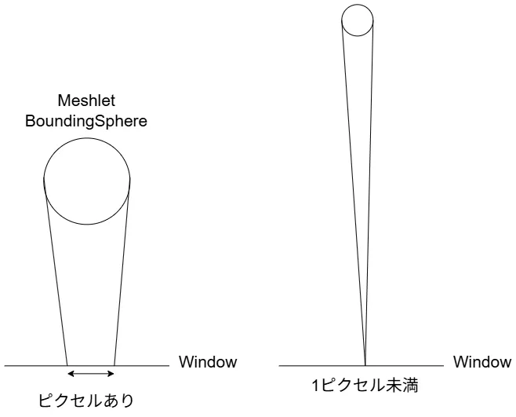
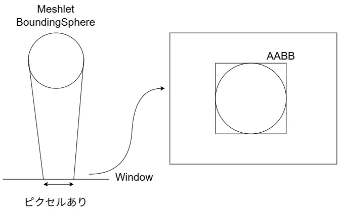
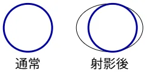
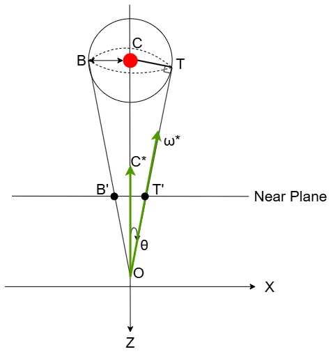
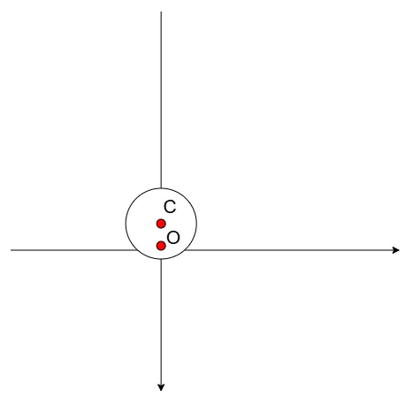
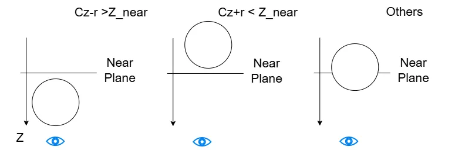
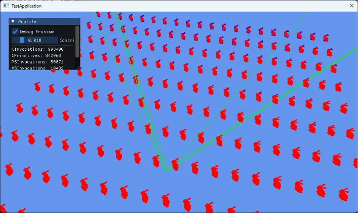

Mesh Shaderによるカリング ～ Meshlet編3 Contribution Culling ～
今回はASでのMeshlet Cullingの3つ目をやっていく,これでラスト.
Contribution Culling、あまりにも小さいMeshletはカリングしようというやつ.
参考にするのはもちろんこちら1,非常にためになってます...
やりたいことは簡単、まず近くの物体と遠くの物体を考える.

こんな感じで近くの物体はスクリーン上に現れるため、ピクセル上に描画が可能.
逆に遠くの物体はあまりにも遠い場合はスクリーン上では1ピクセル未満となる可能性がある.
この場合、1ピクセル未満ということは描画はできないため、描画はしなくてもよいわけである.
Meshletはポリゴンの集まりなので、もしもここを通過したら1ピクセル未満でも128ポリゴンの処理がMSで行われちゃう...
なので、そもそも1ピクセル未満はDispatchMeshを起動しないことで、処理負荷を削減していこうという訳である.
では実際どうするか？MeshletのBoundingSphereを使う.
これはカリングの一番最初の段階で用意しているので、わかっている情報である.
このBounding Sphereは平面上では次のように見える.

平面上では円のようになるわけである.
この円に対してAABBを作れれば、スクリーン上のサイズが分かる.
そしたら、スクリーン上でどれくらいのサイズかが分かるので、判定ができるわけだね.
今回の一番面倒なところはこのAABBを求める点.
こいつが結構面倒で、通常のAABBをそのまま使うという訳にもいかないのが面倒な点.

実際に透視投影を行うと、球は歪んでスクリーン上では楕円に見える.
そのため、歪んでいない球状にたいするAABBを計算しても、右のように見た目とは異なるものになってしまう...
これを助けるためにConservation Rasterizeのように、ちょっと大き目な領域を取るという手もあるけど、これだとAABBが急に比べて大きくなるためぴったりが欲しい時にちょっと困る...
これを解決するのが2D Polyhedral Bounds of a Clipped, Perspective-Projected 3D Sphere2という論文.
しっかりとぴったりになるように上手～く計算をしていく.
この論文を基にして更に最適化をすることでAABBを計算していくというのが今回やりたいことだけど、まずはこの論文を理解するところから始めよう.
一番最初に平面に射影した際について考えてみる.

今回はBoundingSphereに対して、という頂点を結んだ円錐を考える.
円錐を考える際にベクトルのような方向が接線となるため、ここと垂直にを考える.
を射影することで、BoundingBoxとなるような位置が求まることになる.
なので、まずはを求めたい.
今回のベクトルの内、わかっているデータを書き出そう.
- BoundingSphereの位置:
- BoundingSphereの半径:
- 原点からベクトルCへの方向:
これだけである.
角度なんかは求まっていないため、使うことはできない.
今回はまず長さを求めてみよう.
は垂直な三角形なので、以下のことが言える.
ここで、
なので、

という風には求まった！
こうして距離が求まればあとはRayの公式を使えばから求まる.
そうなると、次に求めたいのはとなるわけだ.
これは回転行列を使って求めていく.
さて、今回直接はわかっていない.
が、三角形に着目すると以下の関係はわかる.
これが分かれば回転行列では以下のように表せる.
要はベクトルを正規化したものをだけ回転させてを作ったという訳だ.
これでが求まったことになる！！
今回についても計算する必要がある.
こちらはの回転をにするだけでOK.
片方計算したら後はシンプルね.
ただし気を付ける点もあって、それはのとき.

この時は図からも簡単に分かるが、が半径より小さいので、原点が球内となる.
この場合はどう頑張ってもの射影ができない.
ではどうするかというのを考えるのが次の段階.
今回はnear planeでクリップするかを考える.
単純にnear planeと球が重なっている場合、先ほどもあった通り射影ができない.
この時は純粋に円と交差する点を考える必要があるが,まず条件分けをしてみよう.

まず一番左から.
球の中心と半径の差がよりも大きい時.
Zは視点方向に大きくなるので、near planeよりも手前に来ちゃってることになる.
これはクリッピングをしてしまってよいパターンとなる.
そして、次に中央はがよりも小さい時.
この時は絶対に射影が可能なため、はそのまま採用すればよい.
それ以外の場合、一番面倒なのが一番右のようなNearPlaneと交差しちゃってる場合.
この時は円とNearPlaneの軸の交差点を求める必要がある.
今回はNear PlaneがX軸と平行としてみよう.
この時,円の方程式は以下のようになる.
ただし、円の中心がである.
この時X軸上なのでZは常にで固定される.
当てはめて変形をしてあげよう.
この時の大きい値の方を,小さい方をとすると,
となる.
最大側は,最小側はとして考えると、先ほどの完全に決まる場合も交えると,
という風に決定が可能！
これで特殊な射影ができない場合までを含んだ点の決定ができた.
最後に現在例えば軸みたいな特殊な軸を選んで計算しているので、元の軸に戻す必要がある.
今回実は軸に関しては基本的にX軸のとか$$Y軸のしか選ばないが、任意の軸として以下のものを選択が可能.
こういう軸を使って計算しているため,T,Bを基に戻す際は
という計算をして戻すだけで良い.簡単だね.
あとはここまでのことを実際にコードにしてあげればよい.
今回はhlsl基準で組んでみた.
まずはBoundの計算,X軸orY軸固定で計算をしていく.
まずは最初に軸とboundsを入れる箱を用意.
void getBoundsForAxis(bool xAxis, const float3& center, float radius, float nearZ, float3& U, float3& L){
const float3& a = xAxis ? float3(1, 0, 0) : float3(0, 1, 0); // X軸 or Y軸
float2 bounds_az[2];
最初はまずnear planeより手前か奥なのかの判定を行う.
これはで判定ができた.
次はの軸に射影したものをxに、Z軸に射影したものをyに入れる.
その後,の平方根を取ってないバージョンを計算しておく.
// 軸に射影させておく
const float2 projectedCenter = Vector2(dot(a, center), center.z);
// tのsqrtを取ってないバージョン
float tSquared = dot(projectedCenter, projectedCenter) - radius * radius;
float t, cLength, costheta, sintheta;
の時は気を付けないといけないんだった.
この時は射影できない、そのためこの場合は計算をしないようにする.
の平方根を取らなかったのは、ここの計算をするためである.
射影できる場合,まずはを計算しておく.
// C^2 - r^2 < 0の時がカメラの内側
// 内側の場合は射影できないので無視でOK
if(tSquared > 0)
{
// t,c,cos,sinを用意
t = sqrt(tSquared);
cLength = length(projectedCenter);
costheta = t / cLength;
sintheta = radius / cLength;
}
// Near Planeと重なってる際の交差点計算のための用意
float sqrtPart;
if(!isNotClipPlane)
{
float rad2 = dot(radius,radius);
float np = nearZ - projectedCenter.y;
float np2 = np * np;
sqrtPart = sqrt(rad2 - np2);
}
の時がで、の時がである.
まず、射影できる場合はを計算しておく.
for(int i = 0; i < 2; ++i){
// T,Bを計算
if(tSquared > 0) {
const Matrix2& rotateTheta = Matrix2( costheta, -sintheta,
sintheta, costheta);
bounds_az[i] = costheta * (rotateTheta * projectedCenter);
}
という原点を取ってるので、これを省略すると以下のようになる.
こいつを計算しているだけである.
最後にNearPlaneより内側の場合はの計算が必要なため計算.
こいつはに入れるようにすればよい.
// NearPlaneと重なってる or 越えてる + T_z,B_zがnearPlaneより手前
// この場合、条件的にτ,βを計算
if(!isNotClipPlane && (tSquared <= 0 || bounds_az[i].y > nearZ)) {
bounds_az[i].x = projectedCenter.x + sqrtPart;
bounds_az[i].y = nearZ;
}
は符号が逆なのでそこをひっくり返す.
回転はとなればよい.
なので、特に問題なし.
なので、ここは符号逆転.
まあ、単位円を考えれば当たり前ではあるか.
ここまではA-Z空間での計算なので、最後に元の軸に戻せば終わり.
// A-Z軸上の話なので、座標軸を元に戻す
U = bounds_az[0].x * a;
U.z = bounds_az[0].y;
L = bounds_az[1].x * a;
L.z = bounds_az[1].y;
}
ここまでを一気にまとめたのが以下.
void getBoundsForAxis(bool xAxis, const float3& center, float radius, float nearZ, float3& U, float3& L){
const float3& a = xAxis ? float3(1, 0, 0) : float3(0, 1, 0); // X軸 or Y軸
float2 bounds_az[2];
// near planeより奥？
bool isNotClipPlane = (center.z + radius) < nearZ;
// 軸に射影させておく
const float2 projectedCenter = Vector2(dot(a, center), center.z);
// tのsqrtを取ってないバージョン
float tSquared = dot(projectedCenter, projectedCenter) - radius*radius;
float t, cLength, costheta, sintheta;
// C^2 - r^2 < 0の時がカメラの内側
// 内側の場合は射影できないので無視でOK
if(tSquared > 0)
{
// t,c,cos,sinを用意
t = sqrt(tSquared);
cLength = length(projectedCenter);
costheta = t / cLength;
sintheta = radius / cLength;
}
// Near Planeと重なってる際の交差点計算のための用意
float sqrtPart;
if(!isNotClipPlane)
{
float rad2 = dot(radius,radius);
float np = nearZ - projectedCenter.y;
float np2 = np * np;
sqrtPart = sqrt(rad2 - np2);
}
for(int i = 0; i < 2; ++i){
// T,Bを計算
if(tSquared > 0) {
const Matrix2& rotateTheta = Matrix2( costheta, -sintheta,
sintheta, costheta);
bounds_az[i] = costheta * (rotateTheta * projectedCenter);
}
// NearPlaneと重なってる or 越えてる + T_z,B_zがnearPlaneより手前
// この場合、条件的にτ,βを計算
if(!isNotClipPlane && (tSquared <= 0 || bounds_az[i].y > nearZ)) {
bounds_az[i].x = projectedCenter.x + sqrtPart;
bounds_az[i].y = nearZ;
}
sintheta *= -1; // 回転を逆に
sqrtPart *= -1; // 解を逆に
}
// A-Z軸上の話なので、座標軸を元に戻す
U = bounds_az[0].x * a;
U.z = bounds_az[0].y;
L = bounds_az[1].x * a;
L.z = bounds_az[1].y;
}
さて、今回ほしいのはスクリーンのBoundingBox.
なので、これを計算していく必要がある.
まず先ほどの関数でX,Y軸それぞれの位置を計算して求める.
その後、これをView-Projection行列で射影して、w除算をすればスクリーンの値となる.
これはとなってるはずなので、このBoundを使えば目的が達成できそう！！
/** Center is in camera space */
float4 getBoundingBox(const float3 center, float radius, float nearZ, const float4x4& vp){
float3 maxXHomogenous, minXHomogenous, maxYHomogenous, minYHomogenous;
// X,Y軸に対して計算
getBoundsForAxis(true, center, radius, nearZ, maxXHomogenous, minXHomogenous);
getBoundsForAxis(false, center, radius, nearZ, maxYHomogenous, minYHomogenous);
// VP行列の計算
float4 r;
// right
r.y = dot(maxXHomogenous, vp.row(0)) / dot(maxXHomogenous, vp.row(3));
// left
r.x = dot(minXHomogenous, vp.row(0)) / dot(minXHomogenous, vp.row(3));
// bottom
r.w = dot(maxYHomogenous, vp.row(1)) / dot(maxYHomogenous, vp.row(3));
// top
r.z = dot(minYHomogenous, vp.row(1)) / dot(minYHomogenous, vp.row(3));
return r;
}
さて、これで欲しいBoundが分かった.
ここまでやってなんだけど、ここからが最適化のお話となる.
基礎部分が重すぎるねこれは...
今回参考にするのはsphere_screen_extents3という関数.
これが今まで長々とやってきた論文の内容を最適化したものである.
ちょっと上のコードの記号として見やすいようにコードを書き変えつつ、中身を見てみよう.
この関数ではBoundingBoxの中心と半径,そしてprojection行列を取る.
今回の最適化ではまずnear planeを考えない.
つまり、先ほど話したnear planeに球がぶつかるという条件は排除してる.
あくまで前提として、カメラより前に絶対にものがあるとしてそこの処理は排除してるわけだ.
そしたらまずはを求める.
Tを求めるためにでも使用するため、を計算する.
さて、この後の計算が最適化の光るところ.
逆に言えばここで私は何やってるのかわからず、理解するのに時間を費やしました.
まずは先ほどと同じようにを求めることを考える.
今回原点は今回も0なので省略してを計算すればよい.
ここでとして考えてみよう.
これでが細かく分解された.
さて、これは現在カメラの座標系,つまりビュー座標系である.
これをprojection行列を掛けることで射影空間に持っていく.
更に言うとで割ることでというNDC空間に持っていくことを考える.
この辺の詳しい話は別の記事4で書いてるので、詳しくはそっちを読んでほしい.
この際の行列の式をのみで考えると以下のようになる.
ここで、とすると、
となる.
上手く色々消えて綺麗になった!!
これがRectの右側となるわけだ.
左側は単純にとなるとの符号を反転させるだけなので,
これを計算したら以下のようになる.
う～ん賢い.
float ha=c.x*t, hb=c.x*r, hc=c.z*t;
result.x=(ha-d)*p._11/(hc+hb); // left
result.z=(ha+d)*p._11/(hc-hb); // right
う～んなんでここで傾き求めてんだ～？なんでだ～？と思いつつ、あきらめて布団で目を閉じた瞬間に透視除算が脳内に降ってきて気づいた.
数学者もこんな感じで数式が振ってきたりするんかね？あまりにもパズルのピースがハマった感じで気持ちよかったです.
さて、後は消化試合.
の部分をに変えて、遠く.
はと区別するために添え字を付けてみた.
これより、
単純に入れ替えただけなので簡単ですね.
こちらも同じような式になる.
// calculate vertical extents
float ty=sqrt(c.y*c.y+c.z*c.z-r2);
float va=c.y*ty, vb=c.y*r, vc=c.z*ty;
result.y=(va-d)*p._22/(vc+vb); // bottom
result.w=(va+d)*p._22/(vc-vb); // top
return result;
}
こうして4つの部分を求めることができればAABBも完成となる！
この最適化した式がどういう計算してるのか分かったね.
ここで捕捉ですが、中級グラフィックス入門の方での説明では同じ式に,つまりView-Projection行列を入れてる.
これちょっと個人的には怪しいと思う...
理由は今までの計算を見ればわかるけど、透視除算をしているのでワールド座標でを割ってしまうとカメラの移動とか回転が全て無視されるからである.
多分ここはそもそもの球をview空間まで持って行った状態でprojection行列を渡すというのが必要だと思う.
自分の実装はこっちで進めていこうと思う.
さて、実装は簡単でまずは位置をView空間に持って行く.
wには半径が入ってるので影響させないように注意.
スケールに関してはWorldで確定してるので、Viewで大きさが変わることはない.
そして、処理はContributionCullingで行われる.
bool IsVisible(Meshlet meshlet, float3 cameraPosition, float4 planes[6], float4x4 world, float4x4 view, float4x4 proj)
{
float4 sphere = TransformSphere(meshlet.BoundingSphere, world);
sphere.xyz = mul(view, float4(sphere.xyz, 1.0f)).xyz;
if (ContributionCulling(sphere, proj))
{
return false;
}
return true;
}
後は
absを使いつつサイズを確定し、指定サイズ分よりも小さければカリングしてしまう.今回は自分で弄れるように
Constant.Contributionで用意しといた.bool ContributionCulling(float4 sphere, float4x4 p)
{
float4 LBRT = SphereScreenExtents(sphere, p);
float w = abs(LBRT.z - LBRT.x); // left - right
float h = abs(LBRT.w - LBRT.y); // top - bottom
return max(w, h) < Constant.Contribution;
}
float4 SphereScreenExtents(float4 c, float4x4 p)
{
float4 result;
float r2 = c.w * c.w;
float d = c.z * c.w;
// for width
float t = sqrt(c.x * c.x + c.z * c.z - r2);
float ha = c.x * t;
float hb = c.x * c.w;
float hc = c.z * t;
result.x = (ha - d) * p._11 / (hc + hb); // left
result.z = (ha + d) * p._11 / (hc - hb); // right
// for height
float ty = sqrt(c.y * c.y + c.z * c.z - r2);
float va = c.y * ty;
float vb = c.y * c.w;
float vc = c.z * ty;
result.y = (va - d) * p._22 / (vc + vb); // bottom
result.w = (va + d) * p._22 / (vc - vb); // top
return result;
}

今回はデバッグ用カメラではなく、ちゃんと今見ているカメラでの判定になってます.
遠くの方が青くなってるので正しそうですね.
結構大変ですが、これでmeshlet単位のカリングは終了！
次からはMSによるポリゴン単位のカリングに入ります.